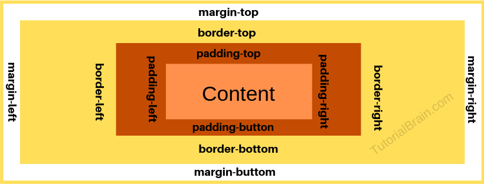

SHORT HAND-margin

- untuk membuat ruang disekeliling elemen, letaknya diluar border, transparan
- untuk ke4 nilai margin ingat searah jarum jam : atas, kanan, bawah, kiri
- boleh pakai nilai negatif spt -10px
- Margin atas dan bawah elemen terkadang diciutkan menjadi margin tunggal yang nilainya = cuma mengambil nilai margin terbesar dari kedua margin, yg nilai margin terkecil tidak berpengaruh. Ini tidak terjadi pada margin kiri dan kanan! Hanya margin atas dan bawah!
- value lain selain value shorthand :
- auto - buat elemen jadi ditengah secara horizontal (lebar/tidur) berdasar elemen parentnya
- inherit - buat elemen copy nilai margin elemen parentnya
- nilai shorthand untuk : (tak apa2 jika salah satu nilai dibwh hilang, selama masih sesuai urutan)
- margin-top
- margin-right
- margin-bottom
- margin-left
aturan shorthand
- jika ada 4 nilai property margin :
- margin : 30px 0px 20px 10px
- margin-top : 30px
- margin-right : 0px
- margin-bottom : 20px
- margin-left : 10px
- jika ada 3 nilai property margin :
- margin : 30px 10px 20px
- margin-top : 30px
- margin-right : 10px
- margin-bottom : 20px
- margin-left : 10px
- jika ada 2 nilai property margin :
- margin : 10px 5px
- margin-top : 10px
- margin-right : 5px
- margin-bottom : 10px
- margin-left : 5px
- jika cuma ada 1 nilai property margin :
- margin : -10px
- margin-top : -10px
- margin-right : -10px
- margin-bottom : -10px
- margin-left : -10px
- cara pakai :
body {
margin: margin-top margin-right margin-bottom margin-left;
}
preview :
Back to Reference